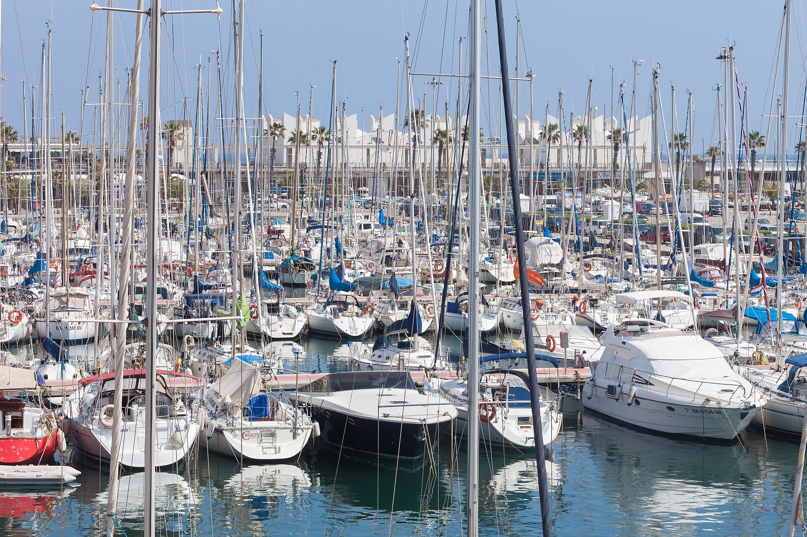

Programma orario
-
08:15–14:30
Viaggio e Atterraggio
Volo verso Barcellona con arrivo programmato alle ore 14:30 al Terminal T2.
-
14:30–15:45
Spostamento Aeroporto → Hotel
Acquisto T-Grup alla stazione T2. Treno Rodalies R2 Nord fino a Passeig de Gràcia, cambio L4 fino a El Maresme | Fòrum. 4 minuti a piedi fino al Vincci Bit.
-
15:45–16:30
Check-in e Sistemazione
Assegnazione della camera e sistemazione dei bagagli.
-
16:30–18:30
Ricarica in Piscina
Primo bagno rigenerante nella piscina sul tetto dell'hotel.
-
18:30–19:00
Movimento verso il Litorale
Passeggiata verso il mare o tram T4 da El Maresme fino a Ciutadella | Vila Olímpica.
-
19:00–20:30
Port Olímpic e Piedi in Acqua
Esplorazione del Port Olímpic, sosta sulla sabbia della Platja del Bogatell.

-
20:30–22:30
🍽️ Cena sulla Rambla del Poblenou
Viale alberato frequentato dai locali. Tapas all'aperto, atmosfera autentica. Scelta libera tra i locali del viale.
-
22:30–23:00
Rientro in Hotel
Camminata lungo Avinguda Diagonal o autobus H16.
🗺️ Mappa del giorno
La linea mostra il percorso a piedi tra le tappe, nell'ordine della giornata. Tocca una tappa per aprirla in Google Maps.